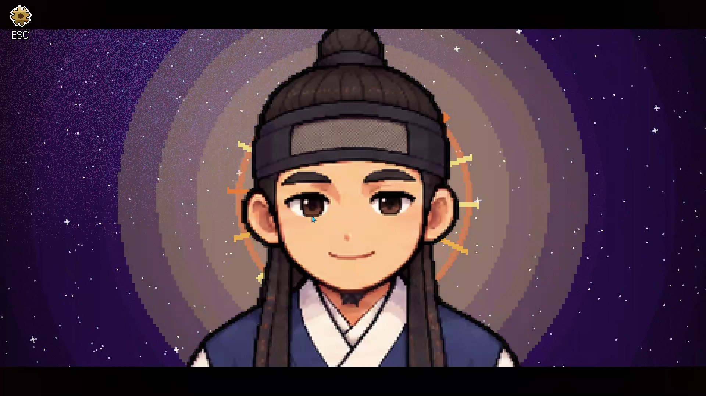
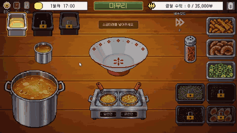

<title>김기백 포트폴리오</title>
<meta name="claude:viewport-fit-sides" content="cover">
<link rel="preconnect" href="https://fonts.googleapis.com">
<link rel="stylesheet" href="https://fonts.googleapis.com/css2?family=JetBrains+Mono:wght@400;500&display=swap">
<link rel="stylesheet" href="assets/site.css">
<canvas id="sky" aria-hidden="true"></canvas>
<nav class="nav" aria-label="섹션">
  <div class="wrap">
    <b>김기백</b>
    <ul>
      <li><a href="#about">소개</a></li>
      <li><a href="#projects">프로젝트</a></li>
      <li><a href="#others">그 밖의 작업</a></li>
      <li><a href="#contact">연락</a></li>
    </ul>
  </div>
</nav>
<main>
<!-- 1 · 첫 화면 -->
<section class="page hero" id="top">
  <div class="wrap hero-grid">
    <div class="who">
      <span class="eyebrow">GAME CLIENT PROGRAMMER</span>
      <h1>플레이어가 주인공이 되는 순간의 전율을 만듭니다</h1>
      <p class="lead">Unity 클라이언트 프로그래머 김기백입니다. 게임 하나하나가 별입니다. 별을 누르면 그 게임을 만들며 부딪힌 문제와 푼 방법이 열립니다.</p>
      <pre aria-hidden="true"><span class="kw">while</span> (player.isPlaying)
{
    thrill<span class="acc">++</span>;
}</pre>
      <div class="btn-row">
        <a class="btn primary" href="#projects">프로젝트 보기 ↓</a>
        <a class="btn" href="#contact">연락하기</a>
      </div>
    </div>
    <div class="sky-map" aria-label="프로젝트 별자리">
      <svg viewBox="0 0 100 100" preserveAspectRatio="none" aria-hidden="true">
        <path d="M10 9 L60 18 L36 58 Z" fill="none" stroke="rgba(184,228,110,.45)" stroke-width="1.3" stroke-dasharray="4 6" vector-effect="non-scaling-stroke"/>
        <path d="M84 4 L80 42 L58 44 L86 62 L66 93 L64 80 L30 92 L4 84 L8 62" fill="none" stroke="rgba(200,210,225,.18)" stroke-width="1" stroke-dasharray="2 6" vector-effect="non-scaling-stroke"/>
        <path d="M60 18 L84 4 M36 58 L64 80 M36 58 L8 62" fill="none" stroke="rgba(200,210,225,.18)" stroke-width="1" stroke-dasharray="2 6" vector-effect="non-scaling-stroke"/>
      </svg>
      <a class="star main" href="ramen.html" style="left:10%;top:9%">
        <span class="dot" aria-hidden="true"></span>
        
        <b>나의 인생 라멘가게</b>
        <span>TEAM · 2D PUZZLE</span>
      </a>
      <a class="star main soon" href="#wip" style="left:60%;top:18%">
        <span class="dot" aria-hidden="true"></span>
        <b>정무대전</b>
        <span>무협 멀티 액션</span>
      </a>
      <a class="star main soon" href="#wip" style="left:36%;top:58%">
        <span class="dot" aria-hidden="true"></span>
        <b>세 번째 프로젝트</b>
        <span>TEAM · 11월 시작</span>
      </a>
      <a class="star sub" href="#o-novalast" style="left:84%;top:4%"><span class="dot" aria-hidden="true"></span><b>Novalast</b></a>
      <a class="star sub" href="#o-highstakes" style="left:80%;top:42%"><span class="dot" aria-hidden="true"></span><b>High Stakes</b></a>
      <a class="star sub" href="#o-deepabyss" style="left:58%;top:44%"><span class="dot" aria-hidden="true"></span><b>Deep Abyss</b></a>
      <a class="star sub" href="#o-breaker" style="left:86%;top:62%"><span class="dot" aria-hidden="true"></span><b>Breaker</b></a>
      <a class="star sub" href="#o-lsm" style="left:64%;top:80%"><span class="dot" aria-hidden="true"></span><b>LIGHTNING STICK MAN</b></a>
      <a class="star sub" href="#o-night" style="left:8%;top:62%"><span class="dot" aria-hidden="true"></span><b>야간상담</b></a>
      <a class="star sub" href="#o-nft" style="left:4%;top:84%"><span class="dot" aria-hidden="true"></span><b>NFT 강화 게임</b></a>
      <a class="star sub" href="#o-unknown" style="left:30%;top:92%"><span class="dot" aria-hidden="true"></span><b>UNKNOWN</b></a>
      <a class="star sub" href="#o-terrain" style="left:66%;top:93%"><span class="dot" aria-hidden="true"></span><b>터레인 시네마틱</b></a>
    </div>
  </div>
</section>

<!-- 2 · 소개 -->
<section class="page" id="about">
  <div class="wrap">
    <div class="sec-head">
      <span class="eyebrow">ABOUT</span>
      <h2 class="h-sec">소개와 쓰는 기술</h2>
    </div>
    <div class="intro-grid">
      <div class="stack-col" style="gap:22px">
        <p class="lead">해군에서 6년 동안 P-3C 해상초계기에 타며 항공조작 부사관으로 일했습니다. 전역 후 게임을 만드는 쪽으로 방향을 정했고, 지금은 네오위즈 K 게임 아카데미 Unity 과정에서 팀 프로젝트와 개인 작업을 이어 가고 있습니다.</p>
        <ul class="timeline">
          <li><div class="when">2026.05 ~ 2027.01</div><div>네오위즈 K 게임 아카데미 · Unity 과정</div></li>
          <li><div class="when">2026.09</div><div>팀 프로젝트 「나의 인생 라멘가게」 · 조리·연출·UI 개발</div></li>
          <li><div class="when">2026.10 ~</div><div>무협 멀티 액션 「정무대전」 개발 중</div></li>
          <li style="padding-bottom:0"><div class="when">이전</div><div>해군 부사관 6년 · 항공조작 (P-3C)</div></li>
        </ul>
      </div>
      <div class="stack" role="list">
        <div role="listitem"><span class="k">ENGINE</span><span class="v">Unity 6000.3<br>URP · uGUI · TextMesh Pro</span></div>
        <div role="listitem"><span class="k">LANGUAGE</span><span class="v">C#<br>Python (에셋·사운드 툴)</span></div>
        <div role="listitem"><span class="k">INPUT</span><span class="v">Input System 1.19</span></div>
        <div role="listitem"><span class="k">TOOLS</span><span class="v">Editor 스크립트<br>씬 빌더</span></div>
        <div role="listitem"><span class="k">COLLAB</span><span class="v">Git · Git LFS<br>.gitattributes 머지 규칙</span></div>
        <div role="listitem"><span class="k">WORKING ON</span><span class="v">멀티플레이 동기화</span></div>
      </div>
    </div>
  </div>
</section>

<!-- 프로젝트 -->
<section class="page" id="projects">
  <div class="wrap">
    <div class="sec-head">
      <span class="eyebrow">PROJECTS</span>
      <h2 class="h-sec">메인 프로젝트</h2>
    </div>
    <article class="proj-card">
      <div class="stack-col" style="gap:14px">
        <span class="eyebrow">STAR 01 · TEAM · 2026.09 · 2주</span>
        <h3>나의 인생 라멘가게</h3>
        <p class="lead" style="font-size:17px">손님이 돌려 말하는 주문을 해석해서 라멘을 만드는 2D 조리 퍼즐 게임. 8인 팀의 메인 개발자로 조리·연출·UI·씬 툴을 맡고, 팀원의 주문·채점 시스템과 게임 루프를 이었습니다.</p>
        <div class="chips"><span class="chip">Unity 6000.3</span><span class="chip">C#</span><span class="chip">uGUI · TMP</span><span class="chip">Input System</span><span class="chip">Editor 스크립트</span><span class="chip">커밋 56/63</span></div>
        <div class="prob-links" aria-label="문제 해결 바로가기">
          <a href="ramen.html#prob-a"><span>A</span>엔딩 크레딧이 끝까지 재생되지 않았다</a>
          <a href="ramen.html#prob-b"><span>B</span>커서가 사라지고, 둘째 손님부터 조작이 멈췄다</a>
          <a href="ramen.html#prob-c"><span>C</span>한 번 누른 입력이 두 번 처리됐다</a>
        </div>
        <div class="btn-row"><a class="btn primary" href="ramen.html">자세히 보기 →</a><a class="btn" href="https://youtu.be/pF59wLZO8Vk" target="_blank" rel="noopener">시연 영상 ↗</a></div>
      </div>
      <div class="stack-col" style="gap:10px">
        <div class="yt" data-id="pF59wLZO8Vk" data-title="나의 인생 라멘가게 시연 영상">
          
          <button type="button" class="yt-play" aria-label="시연 영상 재생"><span>▶</span>시연 영상</button>
        </div>
        
      </div>
    </article>
  </div>
</section>

<!-- 작업 중 -->
<section class="page" id="wip" style="padding-top:0;border-top:none">
  <div class="wrap">
    <div class="sec-head">
      <span class="eyebrow">IN PROGRESS</span>
      <h2 class="h-sec" style="font-size:26px">지금 만들고 있는 것</h2>
    </div>
    <div class="wip-grid">
      <div class="wip">
        <span class="eyebrow">STAR 02 · 무협 멀티 액션</span>
        <h3>정무대전</h3>
        <p class="mute">여섯 문파 중 하나를 골라 겨루는 무협 멀티 액션 게임. 라멘가게와 같은 형식으로 정리하는 중입니다.</p>
        <a class="thumb-wide" href="https://youtu.be/zpFt8mJXa7Y" target="_blank" rel="noopener"><span>▶ 영상 보기</span></a>
      </div>
      <div class="wip">
        <span class="eyebrow">STAR 03 · TEAM</span>
        <h3>세 번째 프로젝트</h3>
        <p class="mute">11월에 시작하는 팀 프로젝트. 진행하면서 채웁니다.</p>
      </div>
    </div>
  </div>
</section>

<!-- 그 밖의 작업 -->
<section class="page" id="others">
  <div class="wrap">
    <div class="sec-head">
      <span class="eyebrow">OTHER WORKS</span>
      <h2 class="h-sec">그 밖의 작업</h2>
      <p class="lead">과정 중에 만든 게임과 영상입니다. 썸네일을 누르면 시연 영상이 열리고, 웹에서 바로 해 볼 수 있는 건 플레이 링크도 붙였습니다.</p>
    </div>
    <div class="others">
      <div class="other" id="o-novalast">
        <a class="thumb" href="https://youtu.be/Okqo8yjtl2w" target="_blank" rel="noopener" aria-label="Novalast 영상 보기"></a>
        <span class="eyebrow">GAME · WebGL</span><b>Novalast</b><p>우주에서 눈에 보이는 모든 것을 파괴하며 보스전까지 버티는 게임.</p>
        <div class="links"><a href="https://youtu.be/Okqo8yjtl2w" target="_blank" rel="noopener">영상 ↗</a><a href="https://play.unity.com/ko/games/f8c74a09-bd21-4e16-ae2c-b342a1997908/novalast-ver101" target="_blank" rel="noopener">플레이 ↗</a></div>
      </div>
      <div class="other" id="o-highstakes">
        <a class="thumb" href="https://youtu.be/pR34jS3oCPQ" target="_blank" rel="noopener" aria-label="High Stakes 영상 보기"></a>
        <span class="eyebrow">카드 베팅 · WebGL</span><b>High Stakes</b><p>예능 「데블스 플랜」의 수식 하이로우 룰을 게임으로 구현한 작품.</p>
        <div class="links"><a href="https://youtu.be/pR34jS3oCPQ" target="_blank" rel="noopener">영상 ↗</a><a href="https://play.unity.com/ko/games/a9e4fa15-e00d-4a8c-b14b-a5af03599ab5/high-stakes" target="_blank" rel="noopener">플레이 ↗</a></div>
      </div>
      <div class="other" id="o-nft">
        <a class="thumb" href="https://youtu.be/dhQ-Co4C3cY" target="_blank" rel="noopener" aria-label="NFT 강화 게임 영상 보기"></a>
        <span class="eyebrow">강화 · 자동 사냥</span><b>NFT 강화 게임</b><p>무기를 강화하고 사냥해 전설 아이템을 노리는 게임. 전설 아이템이 NFT와 연결된다. UGS와 Sepolia 사용.</p>
        <div class="links"><a href="https://youtu.be/dhQ-Co4C3cY" target="_blank" rel="noopener">영상 ↗</a></div>
      </div>
      <div class="other" id="o-deepabyss">
        <a class="thumb" href="https://youtu.be/o3MAWROWvsE" target="_blank" rel="noopener" aria-label="Deep Abyss 영상 보기"></a>
        <span class="eyebrow">2D · WebGL</span><b>Deep Abyss</b><p>잠수함을 조종하는 2D 심해 게임.</p>
        <div class="links"><a href="https://youtu.be/o3MAWROWvsE" target="_blank" rel="noopener">영상 ↗</a><a href="https://play.unity.com/ko/games/c5316d58-7d80-4b99-867a-d829dc26a6c5/deep-abyss" target="_blank" rel="noopener">플레이 ↗</a></div>
      </div>
      <div class="other" id="o-breaker">
        <a class="thumb" href="https://youtu.be/PYXJpKdQYW8" target="_blank" rel="noopener" aria-label="Breaker 영상 보기"></a>
        <span class="eyebrow">3D FPS · WebGL</span><b>Breaker</b><p>3D FPS 게임.</p>
        <div class="links"><a href="https://youtu.be/PYXJpKdQYW8" target="_blank" rel="noopener">영상 ↗</a><a href="https://play.unity.com/ko/games/05d1dab3-69b0-4649-a3d9-b46c3d51789e/breaker" target="_blank" rel="noopener">플레이 ↗</a></div>
      </div>
      <div class="other" id="o-unknown">
        <a class="thumb" href="https://youtu.be/7EcrHt_X7pQ" target="_blank" rel="noopener" aria-label="UNKNOWN 영상 보기"></a>
        <span class="eyebrow">TEAM · 시네마틱</span><b>UNKNOWN</b><p>관측 드론 편대가 이상현상 도시에서 괴수와 마주치는 3D 시네마틱 트레일러. 디렉터로 참여해 기획과 연출을 맡았다.</p>
        <div class="links"><a href="https://youtu.be/7EcrHt_X7pQ" target="_blank" rel="noopener">영상 ↗</a></div>
      </div>
      <div class="other" id="o-lsm">
        <a class="thumb" href="https://youtu.be/bfZDj0d48Nw" target="_blank" rel="noopener" aria-label="LIGHTNING STICK MAN 영상 보기"></a>
        <span class="eyebrow">2D 플랫포머 · Cinemachine</span><b>LIGHTNING STICK MAN</b><p>번개를 찾아가는 2D 플랫포머. 과정에서 처음 만든 게임.</p>
        <div class="links"><a href="https://youtu.be/bfZDj0d48Nw" target="_blank" rel="noopener">영상 ↗</a><a href="https://play.unity.com/ko/games/d3789169-b09b-4a2c-86cf-8c583b521605/lightning-stick-man" target="_blank" rel="noopener">플레이 ↗</a></div>
      </div>
      <div class="other" id="o-night">
        <a class="thumb" href="https://youtu.be/nQV6A8qrcCM" target="_blank" rel="noopener" aria-label="야간상담 영상 보기"></a>
        <span class="eyebrow">공포 · WebGL</span><b>야간상담</b><p>야간 콜센터 상담원이 주인공인 공포 게임.</p>
        <div class="links"><a href="https://youtu.be/nQV6A8qrcCM" target="_blank" rel="noopener">영상 ↗</a></div>
      </div>
      <div class="other" id="o-terrain">
        <a class="thumb" href="https://youtu.be/fTrZAboNWJU" target="_blank" rel="noopener" aria-label="터레인 시네마틱 영상 보기"></a>
        <span class="eyebrow">SOLO · 시네마틱</span><b>터레인 시네마틱</b><p>Unity Terrain으로 혼자 만든 3D 시네마틱 영상.</p>
        <div class="links"><a href="https://youtu.be/fTrZAboNWJU" target="_blank" rel="noopener">영상 ↗</a></div>
      </div>
    </div>
    <div class="btn-row" style="margin-top:22px">
      <a class="btn" href="https://play.unity.com/ko/user/cb9d2950-bc11-4dac-b62b-7d8dfe906d33" target="_blank" rel="noopener">Unity Play 프로필 ↗</a>
    </div>
  </div>
</section>

<!-- 연락 -->
<section class="page" id="contact">
  <div class="wrap">
    <div class="sec-head">
      <span class="eyebrow">CONTACT</span>
      <h2 class="h-sec">함께 만들고 싶은 게임이 있다면</h2>
    </div>
    <div class="contact">
      <span><span class="k">EMAIL</span><span class="mono" style="user-select:all">kbkim235@naver.com</span></span>
      <span><span class="k">GITHUB</span><a href="https://github.com/TwincleStakey" target="_blank" rel="noopener">TwincleStakey ↗</a></span>
      <span><span class="k">PLAY</span><a href="https://play.unity.com/ko/user/cb9d2950-bc11-4dac-b62b-7d8dfe906d33" target="_blank" rel="noopener">Unity Play ↗</a></span>
    </div>
  </div>
</section>
</main>
<footer><div class="wrap">© 2026 김기백</div></footer>

<script src="assets/site.js"></script>
